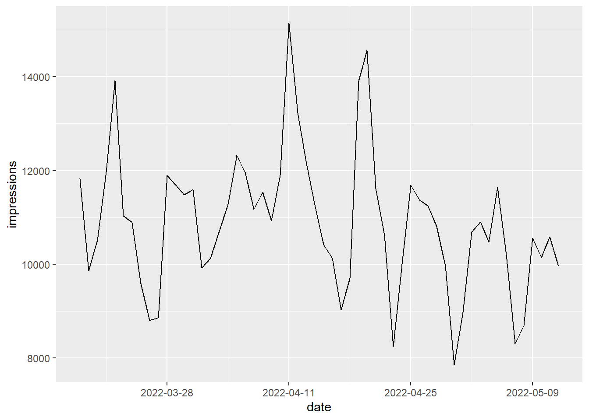
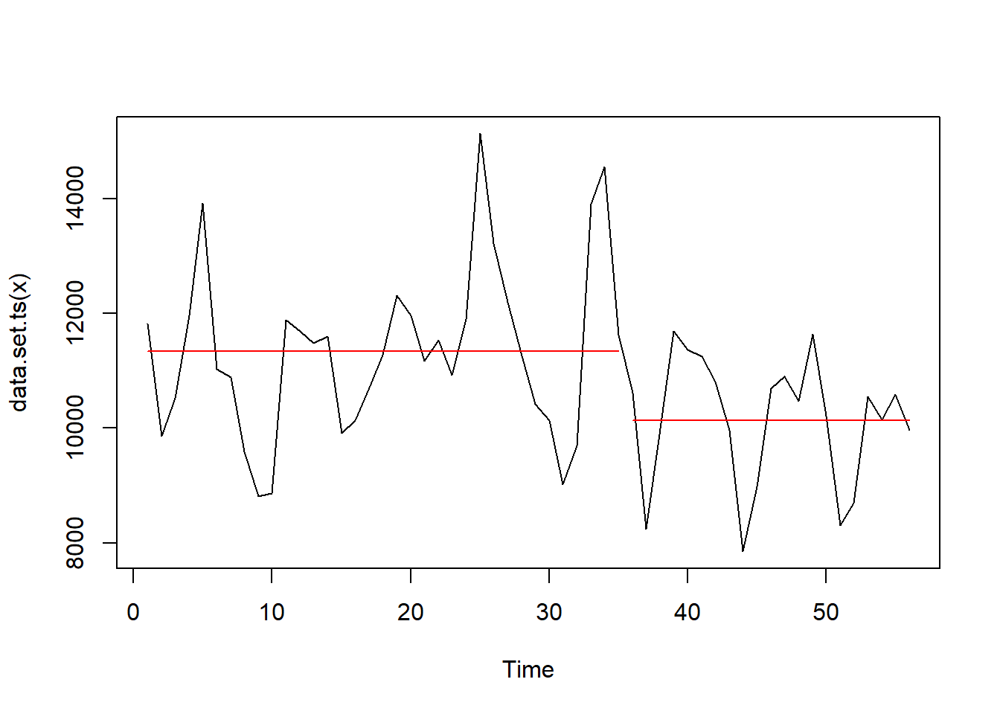
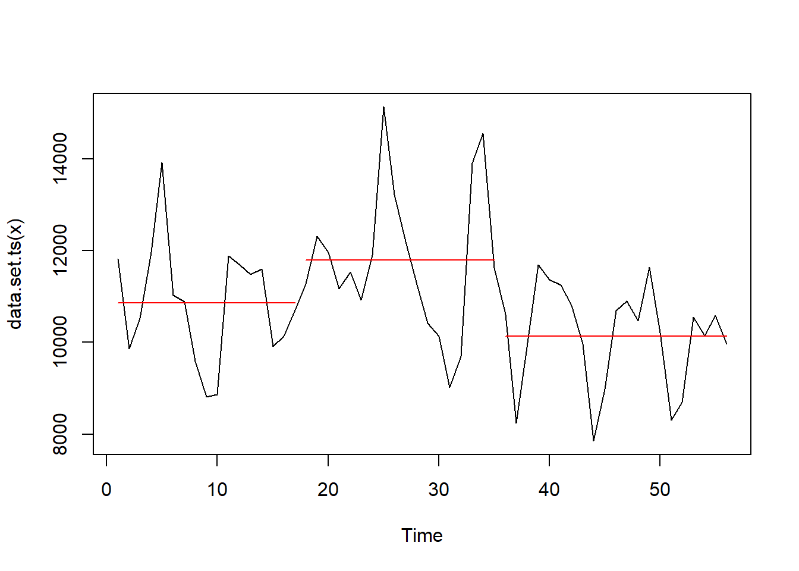
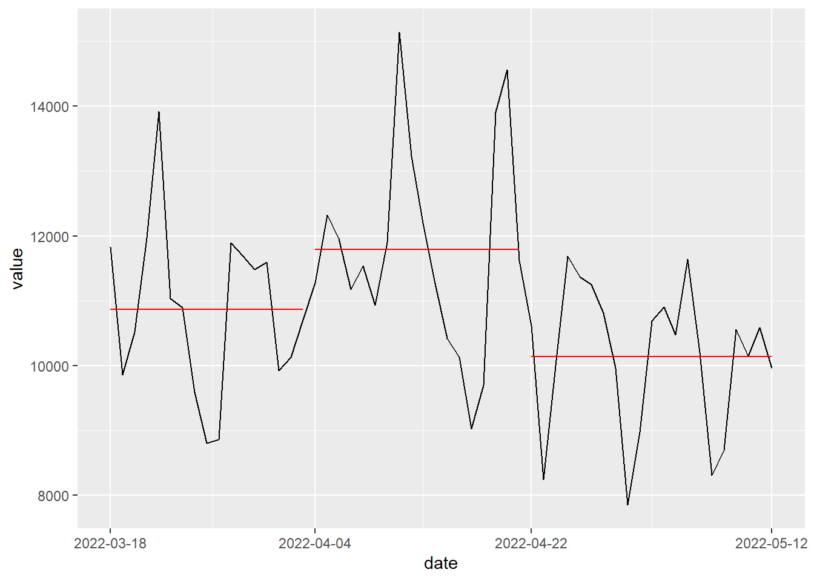
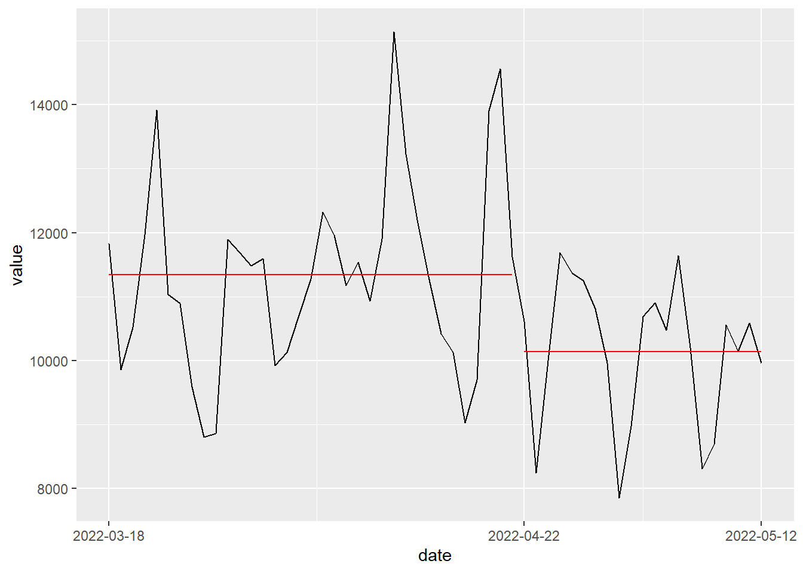

library(tidyverse)
library(changepoint)Mám časovou řadu nějaké metriky. Chci zjistit, zda a případně kde se v ní nacházejí významné změny v průměru. Na to existuje mnoho metod a balíčků, viz např. srovnání v dokumentci balíčku mcp. Další jde vygooglit třeba dotazem change point detection in R.
V tomto zápisku použiju balíček changepoint. Nevím, jestli je pro moje účely nejvhodnější, ale používám ho a osvědčil se mi. Zkoušel jsem i jiné, které dávaly buď skoro stejné, nebo horší výsledky. Nicméně je možné, že jsem je neuměl správně nastavit, protože v dokumentaci mívají hodně matematiky, kterou jsem byl líný studovat.
Dále chci vykreslit graf, který změny v průměru hezky ukáže.
Balíčky
Vstupní data
Jako vstupní data použiju metriky Search Console jednoho webu s dimenzí date. Web je anonymní, ale jedná se o reálný případ, který jsem nedávno řešil pro klienta. Data jsem si předem stáhl a uložil do souboru, který teď jen načtu.
sc_date <- read_rds("data-raw/sc_date.rds")Data mají tuto strukturu:
sc_date |> glimpse()Rows: 56
Columns: 5
$ date <date> 2022-03-18, 2022-03-19, 2022-03-20, 2022-03-21, 2022-03-2…
$ clicks <int> 4428, 3285, 3693, 4420, 5505, 4060, 4035, 3374, 2944, 3017…
$ impressions <int> 11825, 9857, 10523, 11969, 13918, 11034, 10891, 9586, 8807…
$ ctr <dbl> 0.3744609, 0.3332657, 0.3509455, 0.3692873, 0.3955310, 0.3…
$ position <dbl> 3.264355, 3.439992, 3.623776, 3.236193, 3.121354, 3.589179…Zajímají mě imprese a ty se v čase vyvíjely takhle:
sc_date |>
ggplot(aes(date, impressions)) +
geom_line() +
scale_x_date(date_breaks = "2 weeks")
Nalezení změn v průměru
Jedna změna
Samotné nalezení jedné změny v průměru je s balíčkem changepoint a jeho funkcí cpt.mean jednoduché. Stačí numerický vektor a spolehnout se na výchozí hodnoty parametrů.
cpt_object <- cpt.mean(sc_date$impressions)
summary(cpt_object)Created Using changepoint version 2.2.4
Changepoint type : Change in mean
Method of analysis : AMOC
Test Statistic : Normal
Type of penalty : MBIC with value, 12.07606
Minimum Segment Length : 1
Maximum no. of cpts : 1
Changepoint Locations : 35 Výsledek jde i vykreslit základní funkcí plot.
plot(cpt_object)
Víc změn
Předešlý postup detekuje jen jednu (největší) změnu, ale co když chci detekovat víc změn? Aby funkce cpt.mean našla víc změn, je třeba nastavit několik parametrů. Postupoval jsem podle článku Comparison of change point detection methods.
cpt_object <- cpt.mean(
data = sc_date$impressions,
penalty = "AIC",
method = "PELT",
Q = 5,
minseglen = 14
)
summary(cpt_object)Created Using changepoint version 2.2.4
Changepoint type : Change in mean
Method of analysis : PELT
Test Statistic : Normal
Type of penalty : AIC with value, 4
Minimum Segment Length : 14
Maximum no. of cpts : Inf
Changepoint Locations : 17 35 plot(cpt_object)
Hezčí výstupu
Nevýhoda je, že ve standardním výstupu jsou body změny identifikovány jen pořadovým číslem v časové řadě a graf je dost ošklivý. Chci určit přesná data a graf vykreslit balíčkem ggplot2.
Dešifrování třídy cpt
Funkce cpt.mean vrací objekt třídy cpt. Vypadá takhle:
cpt_object |> str()Formal class 'cpt' [package "changepoint"] with 12 slots
..@ data.set : Time-Series [1:56] from 1 to 56: 11825 9857 10523 11969 13918 11034 10891 9586 8807 8864 ...
..@ cpttype : chr "mean"
..@ method : chr "PELT"
..@ test.stat: chr "Normal"
..@ pen.type : chr "AIC"
..@ pen.value: num 4
..@ minseglen: num 14
..@ cpts : int [1:3] 17 35 56
..@ ncpts.max: num Inf
..@ param.est:List of 1
.. ..$ mean: num [1:3] 10864 11794 10140
..@ date : chr "Thu Feb 16 04:18:49 2023"
..@ version : chr "2.2.4"Z toho mě zajímá počet change pointů, jejich pozice a průměry odpovídající segmentům mezi change pointy.
length(cpt_object@cpts)[1] 3cpt_object@cpts[1:length(cpt_object@cpts)][1] 17 35 56cpt_object@param.est$mean[1] 10864.41 11794.50 10139.90Data, které odpovídají pozicím, najdu snadno:
sc_date$date[cpt_object@cpts[1:length(cpt_object@cpts)]][1] "2022-04-03" "2022-04-21" "2022-05-12"cpt –> tibble
Z toho už dokážu sestavit funkci, která vrátí přehledný data frame segmentů.
cpt_as_tibble <- function(cpt, dates) {
cpt_dates <- dates[cpt@cpts[1:length(cpt@cpts) - 1]]
tibble(
start_date = c(min(dates), cpt_dates + 1),
end_date = c(cpt_dates, max(dates)),
value = cpt@param.est$mean
)
}
cpt_as_tibble(cpt_object, sc_date$date)| start_date | end_date | value |
|---|---|---|
| 2022-03-18 | 2022-04-03 | 10864.41 |
| 2022-04-04 | 2022-04-21 | 11794.50 |
| 2022-04-22 | 2022-05-12 | 10139.90 |
Graf pomocí ggplot
A teď již můžu vykreslit hezčí graf.
cpt_plot <- function(cpt, dates) {
segment <- cpt_as_tibble(cpt, dates)
tibble(date = dates, value = as.numeric(cpt_object@data.set)) |>
ggplot(aes(date, value)) +
geom_line() +
geom_segment(
data = segment,
aes(x = start_date, xend = end_date, y = value, yend = value),
color = "red"
) +
scale_x_date(breaks = c(segment$start_date, max(dates)))
}
cpt_plot(cpt_object, sc_date$date)
Ještě ověřím, že funkce správně pracují i s jednou změnou.
cpt_plot(cpt.mean(sc_date$impressions), sc_date$date)
A to je všechno :-)